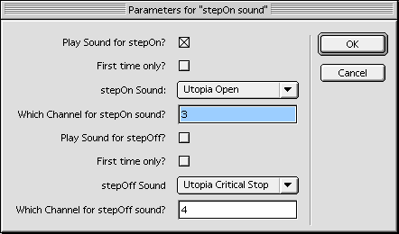

|
Dear Multimedia Handyman |
|
Thank you for your article on the maze game. I was able to create my own maze game for my masters class. At the moment I want to place invisible rollovers to play a puppet sound intersection. How can I do this? Dear Neil, I'm not sure what you mean by invisible rollovers. Rollovers refer to the mouse rolling over something, but the maze game doesn't use the mouse. If you're looking for sound effects to play when the mazeMan "steps" on something, that's not a rollover. Since we can't use the built in rollOver event, let's create our own event called "stepOn". While we're at it, we might as well create a stepOff event as well. We can now use the stepOn and stepOff events to trigger any number of occurences. For starters, we'll have it trigger a sound playing. You could have many similar behaviors in a game -- some which add or deduct points or time, others which trigger booby-traps, or perhaps even a worm-hole transport to another spot in the maze. Creating the behaviors like this means that we don't have to limit their use to invisible sprite... they can go on any sprite. If you do want to have the trigger sprites invisible, use the tool palette to make an outline rectangle (shape cast member) on the stage. You can use a single shape cast member in multiple sprite channels -- no need to create a separate one for each sprite instance. Once you've positioned them, with the rectangle sprite selected, use the tool palette to make the line weight 0. Voila! It's invisible. For this demo, I'm not going to turn the rectangular sprite invisible. That way you'll be better able to observe the behavior in action.
A sample movie is available for download in Mac or PC format. This is a Director 7 movie. Let's think about the behaviors we're going to need. For maximum flexibility, we'll create one behavior called "stepOn Sensor" which checks for the intersection of its own sprite and the mazeMan sprite. This sensor behavior can send out the stepOn or stepOff message to other behaviors which don't have to think about that intersection stuff. They simply execute their tasks when tehy receive the stepOn or stepOff event command. The stepOn Sensor will need to repeatedly compare its sprite's rect with the mazeMan sprites rect. When an intersection occurs, it will send out the stepOn event command. But when mazeMan steps onto this sprite, it will likely remain there for several frames. We don't want the stepOn command to be repeatedly sent out for the duration of the intersection -- only when the stepOn first occurs. We can use a pStatus property to keep track of that. Here's the behavior: -- stepOn Sensor Behavior
-- copyright © 1999, ZZP Online, LLC
-- use in conjunction with mazeMan and mazeMover behaviors
global gMazeMan
property pStatus, pSprite, spriteNum, pMazeManSprite
on beginsprite me
pSprite = sprite(me.spriteNum)
pMazeManSprite = sprite(gMazeMan)
pStatus = #clear
end beginSprite
on exitFrame me
myRect = pSprite.rect
mazeManRect = pMazeManSprite.rect
if intersect(myRect, mazeManRect) > 0 then
if pStatus = #clear then
pStatus = #stepOn
sendSprite(spriteNum, #stepOn)
end if
else
if pStatus = #stepOn then
pStatus = #clear
sendSprite(spriteNum, #stepOff)
end if
end if
end
The pStatus property allows me to send out the event commands only once. If this isn't intuitive to you, spend a bit of time thinking about the logic. This concept has many applications, so it's worth taking the time to understand. Using this behavior, what will happen when mazeMan steps on this sprite? The behavior sends out a message to all other behaviors on the same sprite. And that's it. This behavior doesn't play any sound or have any other action which is apparent to the user. Its only job is to watch for stepOn and stepOff and then forward those events to other behaviors. Now, let's make some of those other behaviors. We'll start with sound. For maximum flexibility, we'll create a behavior which allows the author to specify a separate sound member and sound channel for stepOn and stepOff. We'll also add the option for the sound to play only on the first stepOn or stepOff. For example, this might be useful when applied to a sprite representing a pile of gold. The first time the mazeMan steps on it, we hear a "ch-ching" sound effect. But once the player has collected the gold, it won't make any sound on subsequent intersections. Here's the gpdl dialog box and the code:  -- stepOn Sound Behavior
-- copyright © 1999, ZZP Online, LLC
-- use with stepOn Sensor behavior
property pOnSound, pOffSound
property pPlayStepOn, pPlayStepOff
property pOnChannel, pOffChannel
property pFirstStepOnOnly, pFirstStepOffOnly
on stepOn me
if pPlayStepOn then
puppetSound pOnChannel, pOnSound
pPlayStepOn = NOT(pFirstStepOnOnly)
end if
end stepOn
on stepOff me
if pPlayStepOff then
puppetSound pOffChannel, pOffSound
pPlayStepOff = NOT(pFirstStepOffOnly)
end if
end stepOff
on getPropertyDescriptionList me
pdlist = [:]
addprop pdlist, #pPlayStepOn, [#comment:"Play Sound for ¬
stepOn?", #format:#boolean, #default:1]
addprop pdlist, #pFirstStepOnOnly, [#comment:"First time ¬
only?", #format:#boolean, #default:0]
addprop pdlist, #pOnSound, [#comment:"stepOn Sound:", ¬
#format:#sound, #default:0]
addprop pdlist, #pOnChannel, [#comment:"Which Channel for ¬
stepOn sound?", #format:#integer, #default:3]
addprop pdlist, #pPlayStepOff, [#comment:"Play Sound for stepOff?", ¬
#format:#boolean, #default:0]
addprop pdlist, #pFirstStepOffOnly, [#comment:"First time only?", ¬
#format:#boolean, #default:0]
addprop pdlist, #pOffSound, [#comment:"stepOff Sound", #format:¬
#sound, #default:0]
addprop pdlist, #pOffChannel, [#comment:"Which Channel for stepOff ¬
sound?", #format:#integer, #default:4]
return pdlist
end getPropertyDescriptionList
The getPropertyDescriptionList handler looks intimidating (it's not really), but the stepOn and stepOff handlers are pretty straightforward. If the user has checked the box to play a sound on stepOn, then the pPlayStepOn property is TRUE and the pOnSound plays in the pOnChannel. The stepOff handler is the same. The only tricky part is the pFirstStepOnOnly property. If the user has checked to play the sound the first time only, then pFirstStepOnOnly is TRUE. After the sound plays once, the pPlayStepOn (or pPlayStepOff) property gets set to NOT(pFirstStepOnOnly) -- which would be FALSE, so it won't play on subsequent stepOn (or stepOff) occasions. To see how all of this appears to the user, reset the demo movie and move mazeMan to the left and down. The gold coins have the stepOn Sound behavior set such that it will play a stepOn sound only the first time, but will play the stepOff sound indefinitely. In contrast, if you move up to the right and hook around, the small black rectangle will play on the stepOn event only (not stepOff), but it will play on every stepOn, not just the first time. For a variation, I created another behavior for the other pile of gold coins at the bottom of the maze. I call it stepOn Vanish. This behavior moves the sprite offstage (locH = 2000), and allows you to select whether this should happen on stepOn or stepOff. Here's that code: -- stepOn Vanish Behavior
-- copyright © 1999, ZZP Online, LLC
-- use with stepOn Sensor behavior
property pSprite, pEvent
on stepOn me
if pEvent = #stepOn then
sprite(me.spriteNum).locH = 2000
end if
end stepOn
on stepOff me
if pEvent = #stepOff then
sprite(me.spriteNum).locH = 2000
end if
end stepOff
on getPropertyDescriptionList me
set pdlist to [:]
addprop pdlist, #pEvent, [#comment:"Which event?", #format:¬
#symbol, #default:#stepOn, #range:[#stepOn,#stepOff]]
return pdlist
end getPropertyDescriptionList
The possibilities are virtually endless now that we have the stepOn Sensor behaviors. With this as the model, see what other custom events you can create -- and for flexibility and reuse, remember to keep the event separate from the resulting action. Good luck with your game! Send your questions to the Handyman. Questions will be selected on the basis of general applicability. For prompt replies to specific questions, post your inquiries in the Help Central section of DOUG. |